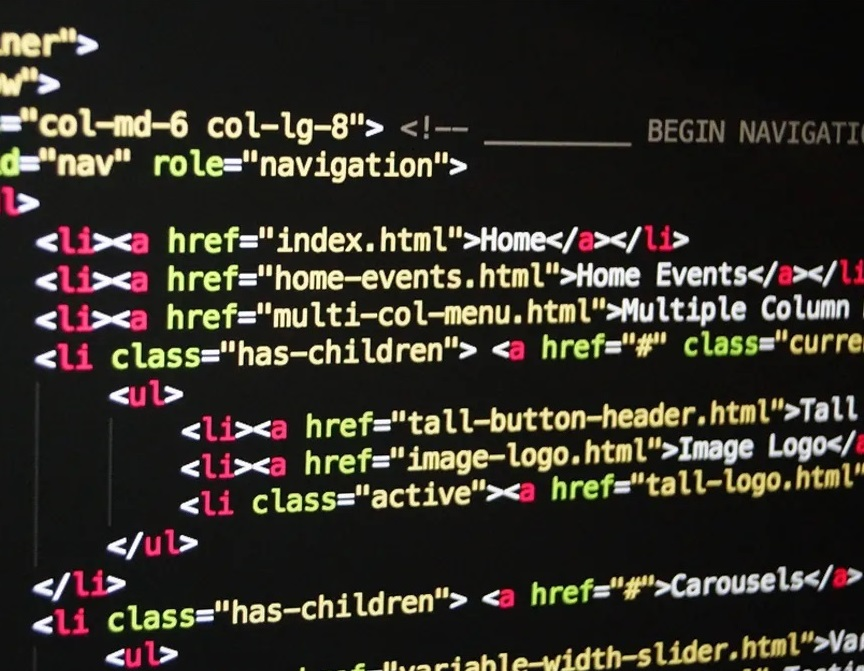

Minha Jornada
Eu sou um músico e designer que está estudando programação front-end na Alura. Criei essa página como um trabalho de finalização do primeiro módulo do do curso de Front-End que estou fazendo para aplicar o que aprendi durante meu tempo estudando.
Um novo capítulo: Aprendendo a Programar com a Alura
Setembro 2022 - Presente
Aprender a programar sempre foi um desejo.
Apesar de aspirar conhecer mais o mundo por trás dos computadores onde passo a maior parte do meu tempo, pensava que a programação era algo que estava fora do meu alcance, que era somente algo para gênios ou pessoas que começaram a estudar no início de sua juventude.
Mas, durante a Imersão_dev, um curso de dez dias de imersão a programação, eu percebi que poderia aprender a programar. Que eu sou capaz disso.
Fiz os cinco primeiros desafios, mas não porque não conseguiria finalizar a imersão, mas sim porque fiquei intrigado com o layout dos meus projetos e passei muitas horas, que se pareceram minutos, tentando entender como poderia mexer no código para melhorar a parte estética do meu projeto e sua responsividade.
Percebi então, logo em tão pouco tempo, que a área deste novo universo que me atraiu, foi a área de Front-End.
Agora, depois de finalizar o primeiro módulo do meu primeiro curso, sigo aprendendo e exercitando o que aprendi. Criei esta página como uma ferramenta de aplicação do que estou aprendendo e uma maneira de me apresentar para as comunidades de tecnologia.
GFB - Go For Business
Dezembro 2017 - Presente
A GFB é uma empresa que trabalho juntamente com a incrível Gleizy Bodart, atendendo projetos freelance de design, Marketing digital e assessoria em redes sociais.
Licenciatura em Música (UFES), Professor de Violão e Músico Freelance
Março 2014 (Formação em 2020) - Presente
A música é uma das minhas grandes paixões.
Mesmo antes de me formar, a música já fazia parte da minha vida profissional. Sendo em aulas particulares, gigs em casamentos, ou performances em cerimônias religiosas, fui músico durante boa parte da minha vida adulta.
Canais de Estudo
Desde meados de Setembro de 2022, comecei minha jornada no mundo do desenvolvimento. Para que isso se tornasse possível e conseguisse otimizar minha jornada de estudos, separei alguns canais de estudos, além da Alura, que é meu canal principal, para checar em meu tempo livre.
Acredito que seja importante compartilhar com outras pessoas que estão começando a "codar", onde os seus colegas aprendizes estão estudando e o que estão conferindo.
Exemplo
É um textinho embaixo da futura sessão.
Exemplo 🙂
Coisas importantes e significativas levam tempo para serem construidas
Exemplo
Coisas importantes e significativas levam tempo para serem construidas
Exemplo
Coisas importantes e significativas levam tempo para serem construidas
Exemplo 🙂
Coisas importantes e significativas levam tempo para serem construidas
Exemplo
Coisas importantes e significativas levam tempo para serem construidas
Exemplo
Coisas importantes e significativas levam tempo para serem construidas
Ideais Pessoais
- Coisas importantes e significativas levam tempo para serem construidas
- O pouco constante é melhor que o muito que só acontece uma vez
- Honestidade e sinceridade sempre valem a pena
- Seja perseverante e sedento por conhecimento
- Aprenda e exercite o seu "craft" todo dia
- Acredite que mudanças são possíveis